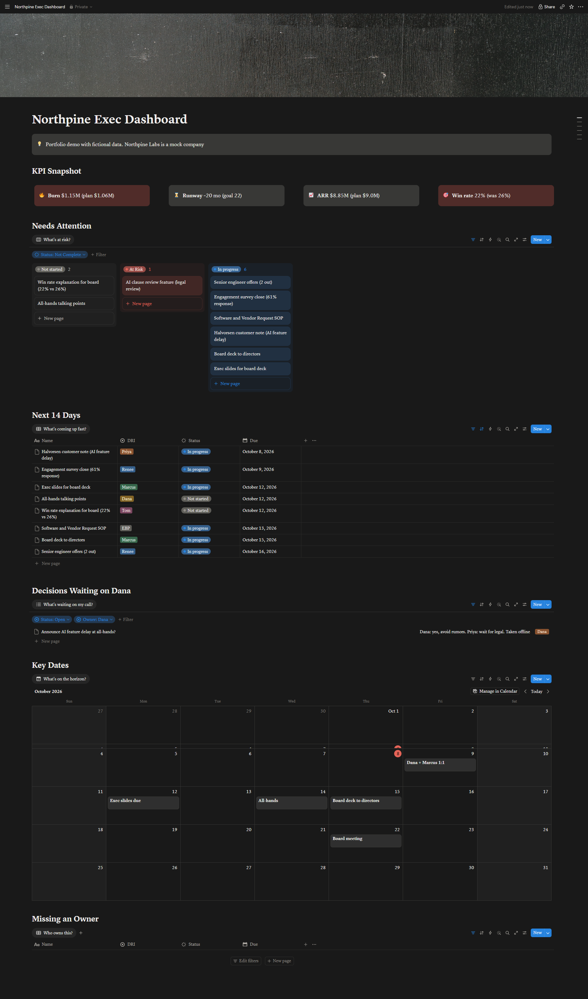

Home → Case Studies → CEO Command Center
She opens it Monday morning and sees what's at risk, what's due in the next two weeks, and which decisions are waiting on her, without asking anyone.
A weekly exec meeting ends with a dozen commitments, two open disagreements, and a board deck due in nine days.
Turned the exec staff transcript into structured records: every priority gets a DRI, status, due date, and area.
Priorities, a Decision Log, and Key Dates, kept on a separate data page so the CEO never edits the source by accident.
Each dashboard section is a live, filtered view of the source data. Update a row once and every view updates.
A view that shows only tasks with no owner. When it's empty, nothing is floating.
Northpine Labs is a fictional company. All people, numbers, and deadlines are mock data so the build can be shared publicly.

Scroll to see the full page. Open full size →
Every section is named for the question it answers, in the CEO's own words.
Burn, runway, ARR, and win rate against plan. Off-plan numbers are colored red, because execs read color before numbers.
Every open priority grouped by status, including high-priority work that hasn't started yet, so nothing risky hides.
Only name, owner, status, and due date. Skimmable beats complete.
Only the open decisions she owns, with the context of each so she can decide without digging.
The 1:1, slide deadline, all-hands, board deck send, and board meeting on one calendar, with prep flagged.
The procurement SOP had no owner in the meeting. I claimed it as the EBP, so this view is empty. That's the point.
The meeting summary, board-prep brief, and SOP built from the same exec meeting.
See the toolkit →Calendar to Airtable to AI to Slack: a brief for every external meeting, 24 hours ahead.
See the build →The real-world agendas, decision tracking, and materials cadence behind this dashboard.
100% Quorum →